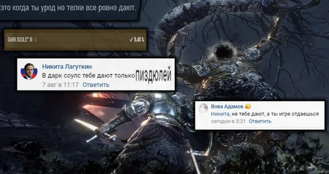
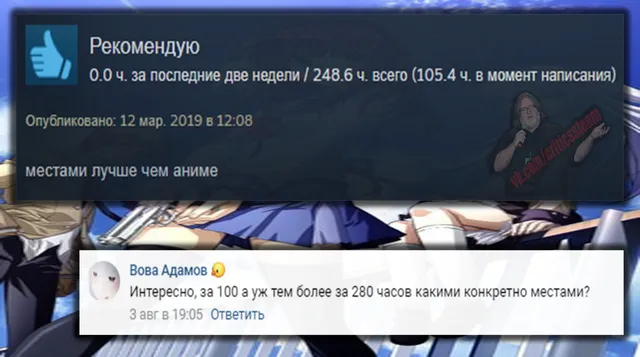
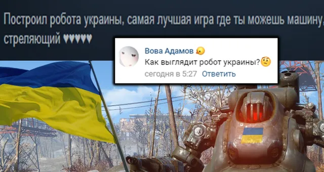

Ваши комментарии
ВКонтакте
😐Август, остановись!
9 августа 2020 · №337 в выгрузке стены · оригинал во ВКонтакте ↗




#ВашиКомментарии@criticssteam #4
😐Август, остановись!
Спешим вас уведомить, что прошла еще одна неделя, на этот раз - августа, просим вас сильно не расстраиваться по этому поводу, кончится лето - наступит новый год - потом будет еще лето, всё будет хорошо)
🔱А сегодня мы собрали самые лучшие комментарии в сообществе за неделю!
Титул [https://vk.com/@criticssteam-sistema-titulov|Комментатора] сегодня получают:
[id119602395|Вова Адамов]
[id491132613|Брюс Уиллис]
[id355653583|Тимофей Королёв]
[id284440935|Никита Лагуткин]
=============
✍🏻Всем спасибо за активность, пишите больше комментариев! Barry Manilow - Mandy
😐Август, остановись!
Спешим вас уведомить, что прошла еще одна неделя, на этот раз - августа, просим вас сильно не расстраиваться по этому поводу, кончится лето - наступит новый год - потом будет еще лето, всё будет хорошо)
🔱А сегодня мы собрали самые лучшие комментарии в сообществе за неделю!
Титул [https://vk.com/@criticssteam-sistema-titulov|Комментатора] сегодня получают:
[id119602395|Вова Адамов]
[id491132613|Брюс Уиллис]
[id355653583|Тимофей Королёв]
[id284440935|Никита Лагуткин]
=============
✍🏻Всем спасибо за активность, пишите больше комментариев! Barry Manilow - Mandy